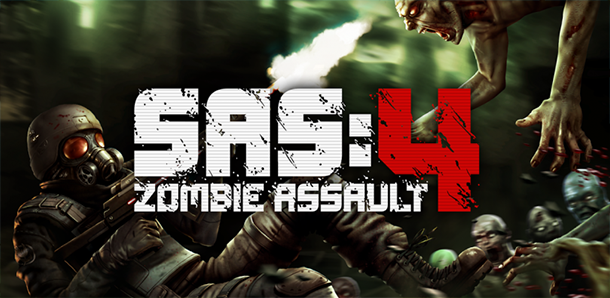
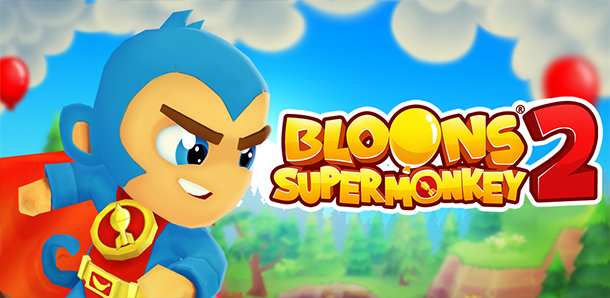
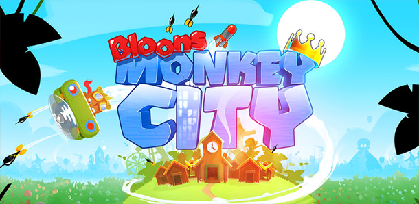
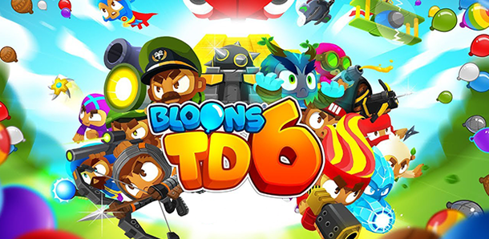
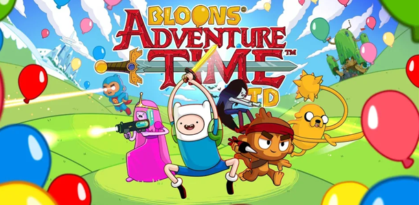

{kind=link}
{kind=link}
{kind=link}
{kind=link}
{kind=link}
{kind=link}
{kind=link}
{kind=link}
{kind=link}
{kind=link}
{kind=link}
{kind=link}
{kind=link}
Projects at
Ninja Kiwi
Sas4 3D animation and optomisation of 3d models renderd to 2d. Map backgrounds, UI design.
Character modeling texturing and animation. Enviroment modeling and textureing.
City view map animations and cosmetic items. Ingame map animations.
Pree production on model pipeline and early styles.
Character modeling textureing and animation. Modeling items, modeling and creating tracks and overworld map, icons.
The Art Collector: Honours Project (Alpha1)
This video shows the first alpha game play of all 5 levels of my honours project at Aberaty university. (Note the loading times are longer in the running build and it dose not have the loading screen, edited to cut down time in the walkthrough) Made in the blender game engine.
Game Jam Videos:
Go Away Mr Bear: Scottish Game Jam Dundee (Best Art Winner)
We enterd as a team of 4, and made this game in 2 days at Abertay.
I did all the 3d work.
Here is the link to the global game jam post:
http://globalgamejam.org/2013/go-away-mr-bear-these-items-do-not-belong-you
You Are the Dragon: Ludum Dare 25 (2nd Prize of Graphics)
Ludum dare is an online, 48 hour game jam whitch hapens a couple times
a year. I enterd this on my own using the blender game engine and won second prize for graphics.
link to ludum post(download):
http://www.ludumdare.com/compo/ludum-dare-25/?action=preview&uid=18865